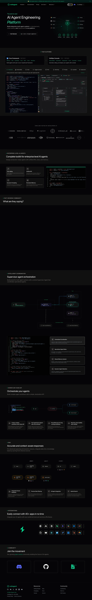

VoltAgent 主题
VoltAgent 的 Design.md 主题展示，围绕AI、媒体内容、SaaS 产品、开发工具组织页面。
AI agent framework. Void-black canvas, emerald accent, terminal-native.
AI媒体内容SaaS 产品开发工具浅色界面B2B 产品效率工具专业工具

来源
- 来源
- getdesign.md
- 镜像
- github:VoltAgent/awesome-design-md
- 网站
- https://voltagent.dev/
- 详情
- https://getdesign.md/voltagent/design-md
色板
#101010: #101010#00d992: #00d992#10b981: #10b981#f2f2f2: #f2f2f2#2fd6a1: #2fd6a1#ffffff: #ffffff#bdbdbd: #bdbdbd#8b949e: #8b949e#3d3a39: #3d3a39#b8b3b0: #b8b3b0#1a1a1a: #1a1a1a#f5f6f7: #f5f6f7
字体
display: Interbody: Robotomono: SFMono-Regularhints: Inter,Roboto,SFMono-Regular,Menlo,Monaco,Consolas,Liberation Mono,Geist Mono,Geist,mono-kickers
圆角
control: 6pxcard: 8pxpreview: 0pxpill: 9999pxsource: design-md
间距
xxs: 2pxxs: 4pxsm: 8pxmd: 12pxlg: 16pxxl: 20px2xl: 24px3xl: 32px4xl: 40px5xl: 48px6xl: 64pxsource: design-md
使用建议
建议
- 建议：Reserve {colors.primary} ({#00d992}) for every primary CTA, the lightning logo glyph, and live-status indicators. The green is the brand's centre of gravity。
- 建议：Use the dark {colors.canvas} ({#101010}) as the only page surface. There is no light-mode rhythm。
- 建议：Build cards with 1 px {colors.hairline} borders, not shadows. Hairlines on dark IS the brand's elevation system。
- 建议：Pair Inter (sentence-case) with SF Mono (inline code, command snippets). Every uppercase moment uses Inter at weight 600 with {2.52 px} tracking — not a separate mono。
- 建议：Use {rounded.sm} 6 px for buttons, {rounded.md} 8 px for cards, {rounded.pill} 9999 px only for inline status tags。
避免
- 避免：introduce a light-mode counterpart. The brand is dark-canvas only。
- 避免：use the primary green as a body-text fill. It's CTA-only。
- 避免：给卡片添加柔和投影，层级应由表面对比和细分割线承担。
- 避免：render the hero headline in heavy weight (700+). The brand's display is intentionally calm at weight 400。
- 避免：replace Inter or SF Mono with a different family — both faces are part of the brand's voice and pairing。
查看 DESIGN.md